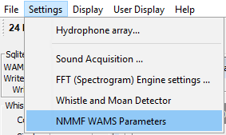
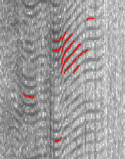
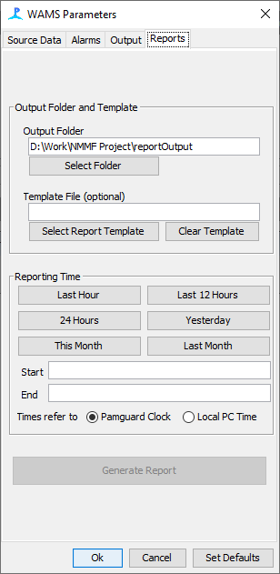

From the File > Add Modules > Utilities menu, select "NMMF WAMS". Enter a descriptive name for the new module and press OK.
The WAMS module requires a Detector module, such as the Whistle & Moan Detector or Click Detector, to be loaded in order to function properly. To simplify configuration, it is recommended that the detector module be added to PAMGuard before the WAMS module is configured.
In addition, a database module and binary store module must be included in order to store output data from the detector and WAMS modules. These modules do not need to be added to PAMGuard before the WAMS module is added or configured, but they must be added prior to processing.
From the Settings menu, select "NMMF WAMS Parameters".
A new dialog should appear containing four tabs: Source Data, Alarms, Output, and Reports
The WAMS module requries a source for the detections to monitor. A drop-down text box will list every detector module currently added to PAMGuard.
The size of each time division needs to be specified, in minutes. The default, 60 minutes, means that each day will be broken up into 24 one-hour intervals. In the event that the value is not evenly divisible into the minutes of a day, the closest even value will be used (e.g. if 125 minutes is entered, 120 minute intervals (6/day) will be used instead).
Note that, in order to remain consistent with the time keeping throughout PAMGuard, all times are based on a UTC time zone (i.e. PAMGuard Time). Therefore the counts shown in the display tables may not match the local computer time period. This must be kept in mind for post-processing and analysis.
Many detector modules, including both the Whistle & Moan Detector and Click Detector, calculate bearing angles when there are 2 or more hydrophone elements in the array. When bearing information is available for detections, bearings that fall within a specific range can be excluded from the count. This is useful for ignoring false detections coming from a known direction, such as ship noise or animals in enclosures in close proximity to the species of interest.
To enable or disable the angle veto, check or uncheck the box.
Angles are specified in degrees and should fall within the range -180° and 180°. 0° is defined as the direction of the primary axis of the array, based on the current array configuration.
In the presence of signals with harmonic components (e.g. burst pulses), the Whistle & Moan Detector will often treat the individual harmonics as separate whistle contours, in turn artificially increasing the WAMS count.
In order to minimize this, a simple Harmonic Detector can be configured within the WAMS plugin to disregard contours with similar starting/ending points and require a minimum amount of time between contours to be considered separate detections.
To enable or disable the harmonics detector, check or uncheck the box.
For two contours to be considered a harmonic and only counted once, both the start times and end times must fall within a certain number of milliseconds of each other. This threshold value can be adjusted in the first text box.
The harmonics detector compares the current detection to previous detections, and this could slow down down processing speed depending on the number of detections, the number of other modules currently running, the computer speed, etc. To reduce this, a minimum gap should be defined in milliseconds such that any previous detections with an end time older than that value (when compared to the start time of the current detection) will not be compared against.
This function should be used with caution, since distinct overlapping whistles could mistakenly be ignored.
In addition to detections, the WAMS module can also monitor Alarm modules and record when an alarm event is triggered.
Historical mean counts are saved to both the database and a separate file in csv format. This is to prevent loss of history data if a new database is used. This tab lets the operator select the folder where the csv file is to be saved.
Details of the csv file can be found in the Output page.
This tab allows the operator to generate a report summarizing the past counts. The report is in a Word format.
The output folder to save the report to must be specified. A docx file can also be used as a template, to provide specific fonts, styles, headers and footers, etc. The template file is optional.
The time period covered by the report is specified by either clicking on a predefined button or typing in start and end times in the appropriate textboxes. The format entered should be "dd MMM yyyy HH:mm:ss". Hint: if you are unsure of the format, click one of the buttons first. This will fill in the start and end times, which you can then easily modify.
Use the radio button to select whether the desired times are in PAMGuard Time (UTC time zone) or the local PC time.
Previous: WAMS module Overview